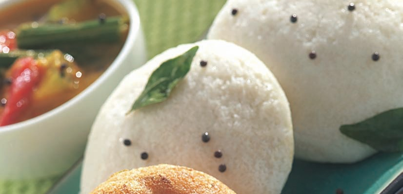
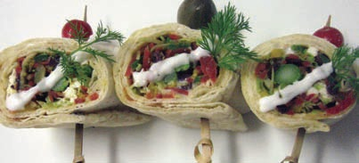
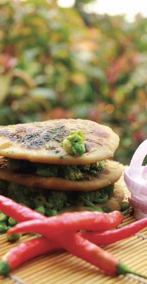

|
|
IDLI
 |
INGREDIENTS
2 cups "Boiled" rice
1 cup Dhuli Urad Dal
Salt to taste
METHOD
Soak the rice and dal separately overnight in water
to just cover. The next morning, grind well and mix
the two. The batter will look like a thick, grainy
custard. Add salt. Leave in a large bowl to ferment
for 6 hours. It will rise and double in volume. To
cook, lightly grease small glass bowls/microwaveproof
idli stand. Microwave on HIGH for 6 minutes
for 6 idlis. It is best to arrange the cups in a circle
on the MWO turntable. You will have to make the
idlis in batches. |
Special Notes:- Alternatively, you can use a ready-made mix that
is available in the market. Mix according to
instructions on the packet and follow cooking
instructions below. |
VEGGIE MAYO ROLLS
 |
INGREDIENTS
20 gm Cabbage, cut in juliennes
50 gm Red bell pepper, cut in juliennes
50 gm Yellow bell pepper, cut in juliennes
50 gm Capsicum, cut in juliennes
50 gm Carrot, cut in juliennes
10 Olives (zaitoon), cut in rounds
10 Gherkins, chopped
20 gm Jalapeño peppers, chopped
4 pcs Asparagus
10 Basil leaves
20 gm Green onion
2 gm Black pepper
10 ml Olive oil
30 gm Feta cheese
30 gm Vegetarian mayonnaise
2 Thin pita bread, 10" size, ready-made
Salt to taste
METHOD
Take a mixing bowl and add all vegetables except
asparagus. Sprinkle olive oil. Take a microwave-proof
bowl and microwave this vegetable mix for 1 minute.
Remove. Keep the mixture in a perforated tray to
remove moisture. Spread mayonnaise on the pita
bread. Arrange vegetable mix lengthwise. Crumble
Feta cheese. Place the asparagus lengthwise and
sprinkle basil leaves. Now roll it tightly. Microwave it
again for 30 seconds. Cut this roll in rounds. Arrange
in a platter. Serve with spicy sauce. |
Tip: Always start off with the
shortest cooking time listed in the
recipe. This way vegetables will
not be overcooked. You can
always cook it for some more time if
required. |
MINI PARATHAS (PANEER
& GREEN PEAS)
 |
INGREDIENTS
100 gm Grated paneer (cottage cheese)
30 gm Green peas
1 Onion, chopped
20 gm Coriander leaves, chopped
5 gm Ginger, grated
10 gm Green chillies, chopped
5 gm Red chilli powder
3 gm Garam masala powder
3 gm Cumin powder
5 gm Chaat masala
20 gm Ghee/Butter
Salt to taste
FOR DOUGH
200 gm Wheat flour (atta)
A pinch of salt
METHOD
In a large bowl, take wheat flour
and a pinch of salt. Add water.
Knead the dough till medium
tight consistency. Cover dough
for 5 minutes with wet cloth.
Divide it into small balls of 70gm
(approx. 5tbsp). In a bowl, mix all
the stuffing ingredients. Stuff the
mixture in the dough. Make into
balls. Preheat the MWO on
MEDIUM mode. Roll the balls
into parathas with a rolling pin
and place on a tray. Turn it after
3 minutes. Pour ½tbsp ghee or
butter. Repeat the same process
again by turning it and adding
butter or ghee. Cook till golden
brown. Serve hot parathas with
curd and your favourite chutney
or with pickle. |
|
|

|
|
.jpg)